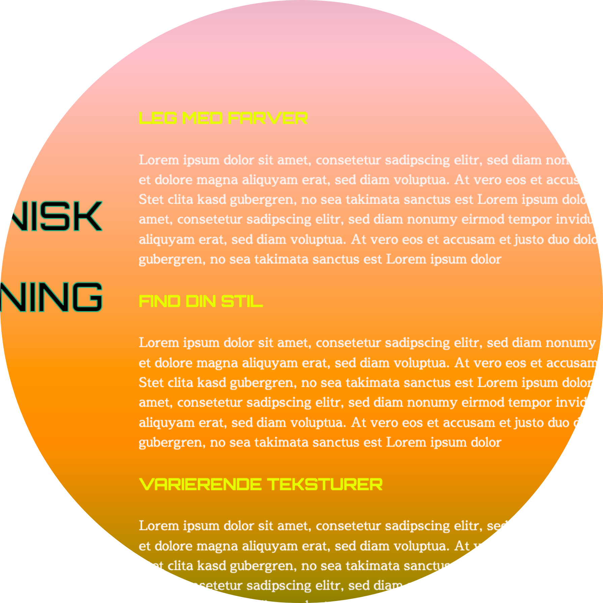
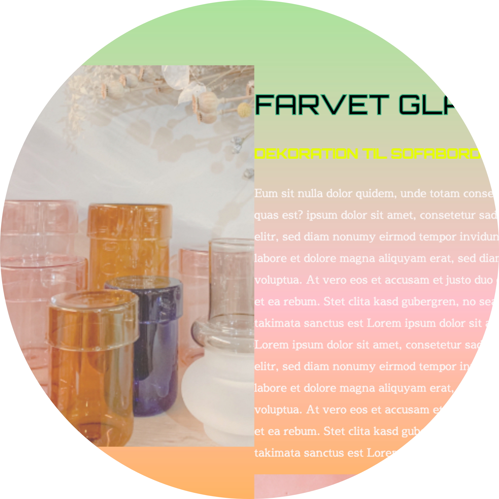
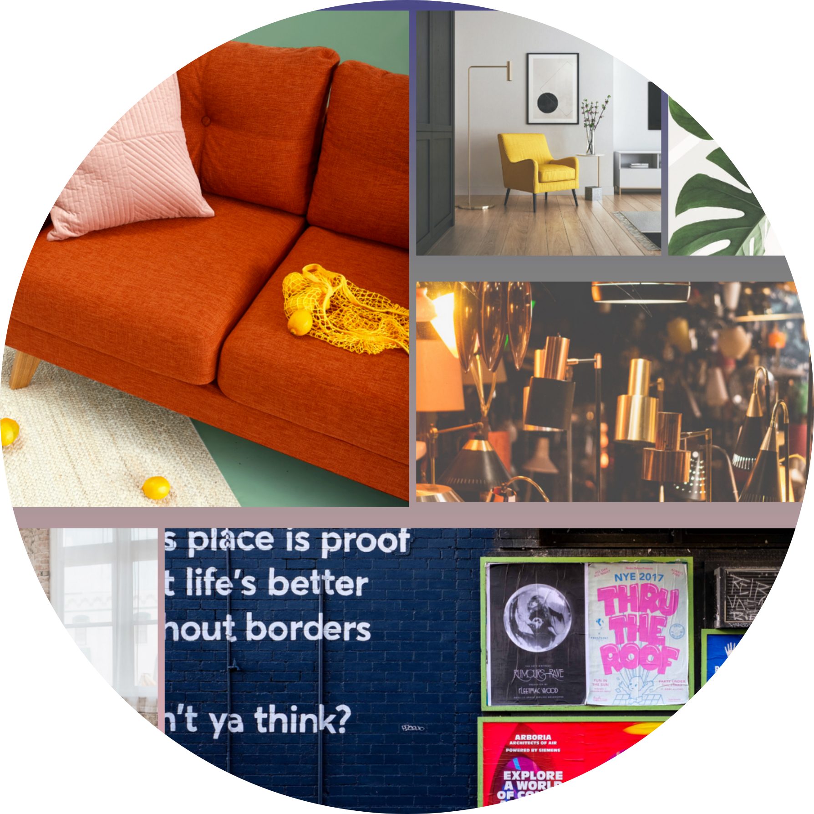
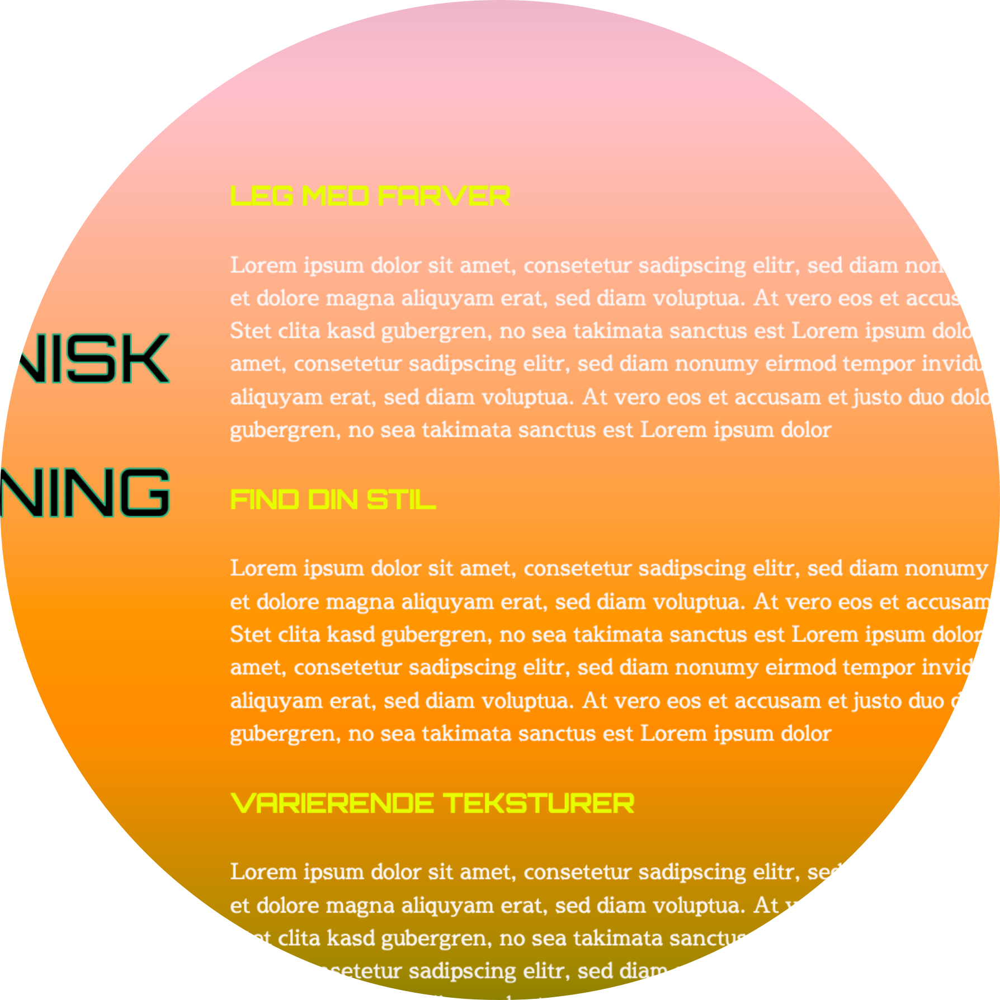
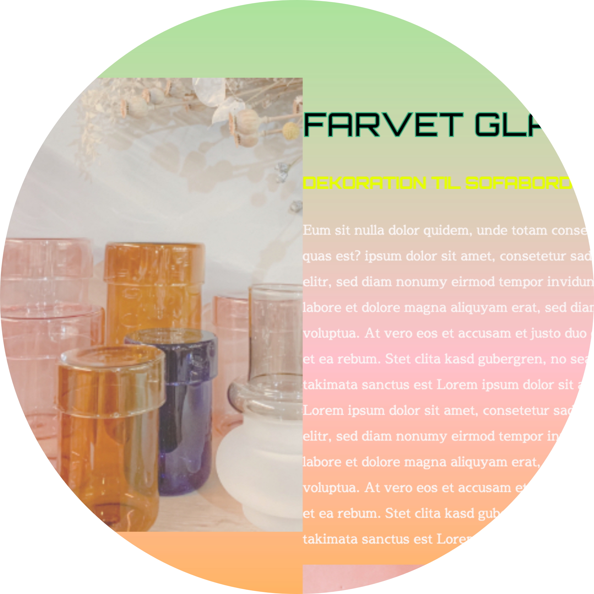
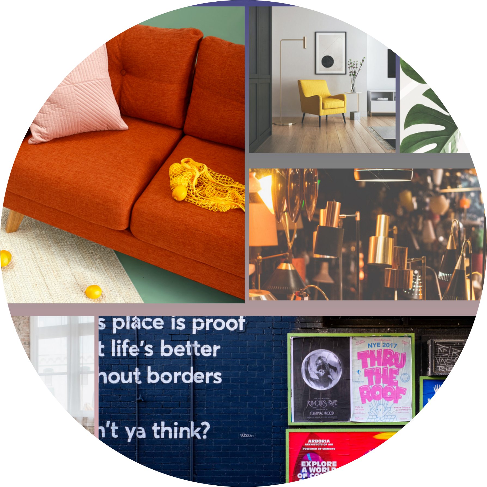

I temaet 'grundlæggende web' har jeg arbejdet med komposition og layout samt designprocesser. Ud fra blandt andet idégenerering, moodboard, skitser og styletile har jeg udarbejdet et responsivt website. Websitet er samtidig designet med udgangspunkt i stilarten digital retro design. Jeg har også arbejdet med photoshop, hvor jeg har redigeret et splashbillede i photoshop.
 




